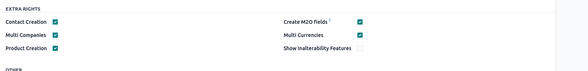
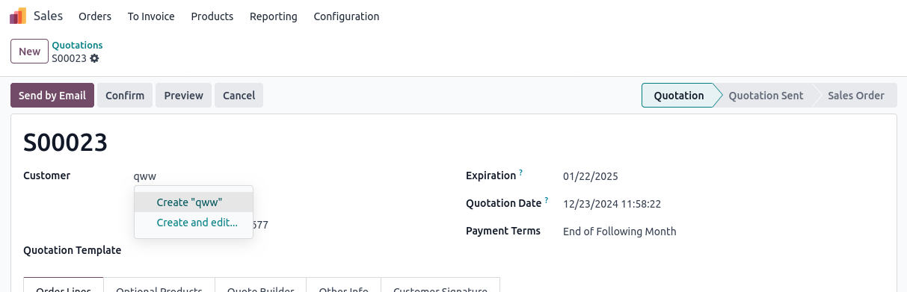

<section class="oe_container">
    <div class="oe_row oe_spaced">
        <h2 class="oe_slogan" style="color:#875A7B;">Hide Quick Create Many2x</h2>
        <h3 class="oe_slogan">Hide create and edit option based on user group.</h3>
        <div class="oe_demo oe_picture oe_screenshot">
            
        </div>
    </div>
</section>

<section class="oe_container oe_dark">
    <div class="oe_row oe_spaced">
        <h2 class="oe_slogan" style="color:#875A7B;">New user group created under extra rights </h2>
        <h3 class="oe_slogan">Users should be assigned to the group if they need quick create access</h3>
        <div class="oe_span6 text-justify oe_mt32">
            <span class="fa fa-arrow-right fa-2x pull-left"/>
            <p class="oe_mb32" style="margin-left:48px;">
            Helps to avoids user errors and duplicates.
            </p>
            <span class="fa fa-arrow-right fa-2x pull-left"/>
            <p class="oe_mb32" style="margin-left:48px;">
            No need to update code from all views in Odoo.
            </p>

        </div>
        <div class="oe_span6">
            
        </div>
    </div>
</section>

<section class="oe_container oe_separator">
</section>